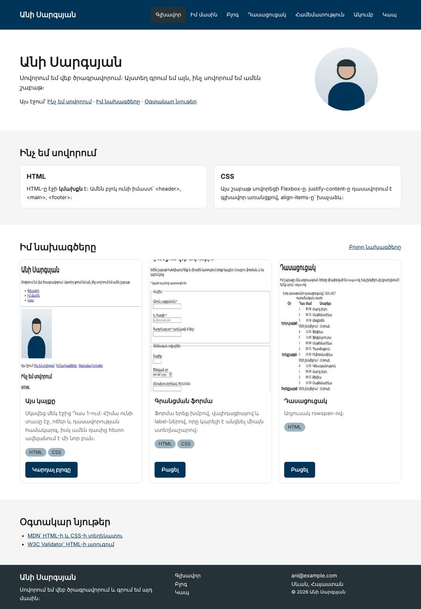

Տնային աշխատանք · HTML Դաս 11 · մինի-նախագիծ
Կայքի header-ը, նախագծերի քարտերը և footer-ը վերակառուցում ենք Flexbox-ով․ justify-content, align-items, flex-direction և margin-top: auto։
Օգտագործիր միայն Դաս 01–11-ը։ flex-grow, gap և flex-wrap հատկությունները Դաս 12-ում են, իսկ ադապտիվությունը՝ Դաս 14-ում։
Header-ում անունը ձախում է, մենյուն՝ աջում, և երկուսը միջինով հավասարեցված են։ Նախագծերի երեք քարտի կոճակները նույն գծի վրա են, թեև տեքստերը շատ տարբեր երկարության են։ Footer-ի ցուցակները ուղղահայաց են։

Սկսիր Դաս 10-ի քո կայքից։ Եթե այն չունես, վերցրու Դաս 10-ի օրինակը։
.flex { display: flex; }
.flex-column { flex-direction: column; }
.justify-start { justify-content: start; }
.justify-center { justify-content: center; }
.justify-end { justify-content: end; }
.justify-between { justify-content: space-between; }
.justify-around { justify-content: space-around; }
.align-start { align-items: start; }
.align-center { align-items: center; }
.align-end { align-items: end; }<header>
<div class="row align-center justify-between">
<div class="col">
<a href="index.html" class="logo">Անի Սարգսյան</a>
</div>
<div class="col">
<nav aria-label="Գլխավոր մենյու">
<ul class="menu flex align-center">
<li><a href="index.html" class="is-active">Գլխավոր</a></li>
...
</ul>
</nav>
</div>
</div>
</header>space-between-ը բաժանում է ազատ տեղը։ Եթե սյուներին տաս w-30 և w-70, ազատ տեղ չի մնա, և ոչինչ չի փոխվի։ Առանց լայնության սյունը այնքան լայն է, որքան իր բովանդակությունը։
Դաս 09-ի .menu li { display: inline-block; }-ը ջնջիր․ հիմա ul-ը flex է, և li-երը շարվում են ինքնաբերաբար։ Inline-block-ի բացակները նույնպես անհետացան։
«Իմ նախագծերը» բաժնի առաջին .row-ը՝ align-center justify-between․ ձախում h2, աջում «Բոլոր նախագծերը» հղումը։
<article class="wrapper card">
<img src="images/project-site.jpg" alt="..." width="600" height="400">
<div class="card__body">
<h3 class="title-4">Այս կայքը</h3>
<p class="text-muted">...</p>
</div>
<div class="card__footer">
<a href="pages/blog.html" class="btn">Կարդալ բլոգը</a>
</div>
</article>.card {
display: flex;
flex-direction: column; /* գլխավոր առանցքը՝ ուղղահայաց */
}
.card__footer {
margin-top: auto; /* վերցնում է ամբողջ ազատ տեղը վերևից */
padding: 0 16px 16px;
}Արա սքրինշոթ։ Ջնջիր margin-top: auto-ն և արա երկրորդը․ կոճակները կբարձրանան իրենց տեքստերի հետևից։ Վերադարձրու։
Երեք սյուն՝ w-40, w-30, w-30։ Հղումների ցուցակը՝ flex flex-column, իսկ երրորդ սյան .wrapper-ը՝ նույնպես flex flex-column։
margin-top: auto-իflex-column-ով| Սխալ | Ինչպես ուղղել |
|---|---|
justify-content: space-between-ը ոչինչ չի անում | Սյուներն ունեն .w-*, և ազատ տեղ չկա |
margin-top: auto-ն չի աշխատում | Ծնողը (.card) flex չէ կամ flex-direction-ը row է |
align-items: center-ը չի կենտրոնացնում ուղղահայաց | Ծնողի բարձրությունը հավասար է բովանդակությանը․ կենտրոնացնելու տեղ չկա |
Սրանք Դաս 11-ի տնային աշխատանքի կետերն են։ «մինի-նախագծում» նշվածները արդեն կատարել ես վերևի քայլերում, մնացածը կատարիր առանձին ֆայլերում կամ նույն թղթապանակում։
global.css-ում բոլոր flex օգնական դասերը։ մինի-նախագծումjustify-content-ի հինգ արժեքը՝ հինգ առանձին բլոկով։align-items-ի չորս արժեքը՝ տարբեր բարձրության երեխաներով։min-height: 400px)։flex-direction: column-ի ազդեցությունը՝ նույն justify-content: center-ով։ Բացատրիր, ինչու արդյունքը փոխվեց։:hover և :focus-visible։ մինի-նախագծումflex-direction: column + margin-top: auto։ Տեքստերը պիտի լինեն շատ տարբեր երկարության։ մինի-նախագծումmargin-top: auto-ն և ուղարկիր երկու սքրինշոթ՝ առաջ և հետո։ մինի-նախագծումflex-column)։ մինի-նախագծում.row՝ վերնագրով ձախում և «Բոլորը» հղումով աջում (justify-between)։ մինի-նախագծումԵրբ բաժին 03-ի բոլոր կետերը նշված են, բացիր օրինակը և քո էջը կողք կողքի։ Բացիր երկուսի կոդն էլ խմբագրիչում։ Գտիր մեկ բան, որ դու արել ես այլ կերպ, և մտածիր՝ որն է ավելի հասկանալի և ինչու։ Քո լուծումը կարող է տարբերվել և լինել ճիշտ։